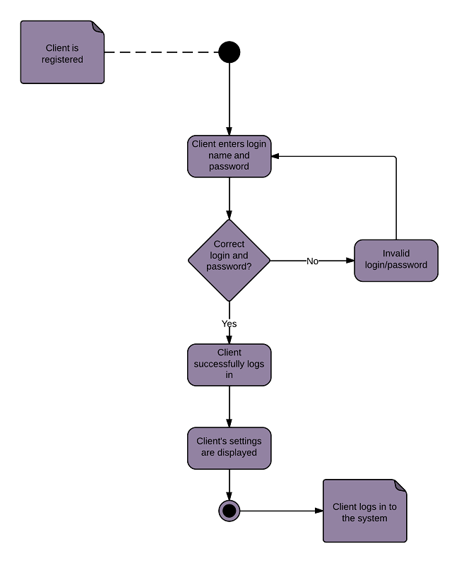

Факультатив. Стандартные графические схемы при разработке ПО¶
Возможности использования UML (Unified Modeling Language)¶

Рассматриваются основные схемы для визуализации процессов, которые реализует код. Основы работы с UML диаграммами (Use-case diagram, sequence diagram, component diagram, class diagram).
На сегодняшний день разработка программного продукта предполагает использование множества различных высокоуровневых компонентов, таких как сторонние библиотеки, программные модули, фреймворки, ОС и т.д. В результате, с одной стороны, процесс разработки ускоряется за счет использования готовых компонентов, однако, с другой стороны, усложняется прозрачность такого кода. Сложнее отследить внутренние зависимости, появляются зависимости от сторонних разработчиков (модуля, фреймворка). Со временем поддерживать такой проект по ряду причин становится сложнее. Для внедрения систематизации и документирования процесса разработки продукта часто используют различные виды диаграмм в зависимости от задачи, такие как IDEF0, ER-модель и UML. Все это — методы моделирования, используемые для графического представления систем или процессов.
IDEF0 (Integration Definition for Function Modeling) — это язык моделирования, который используется для описания функций, действий и процессов в организации. Он использует иерархический подход к моделированию системы, при этом каждый уровень представляет различный уровень детализации. IDEF0 обычно используется в правительственных и военных учреждениях для описания и формализации бизнес-процессов. Особенность IDEF0 заключается в том, что эта методология ориентирована на соподчиненность объектов. IDEF0 была разработана для автоматизации предприятий еще в 1981 году в США.
ER-модель (Entity-Relationship Model) — это метод моделирования, используемый для представления данных в базе данных. Он использует сущности (объекты) и их отношения друг к другу для описания данных. ER-модели обычно используются в разработке программного обеспечения для проектирования баз данных и моделей данных.
UML (унифицированный язык моделирования) — это язык моделирования, используемый для описания программных систем. Он включает в себя набор диаграмм, которые представляют различные аспекты программной системы, такие как варианты использования, классы, компоненты и взаимодействия. UML — это широко используемый язык моделирования в разработке программного обеспечения, который поддерживается многими инструментами и платформами.
Таким образом, IDEF0 используется для моделирования функций и процессов внутри организации, ER-модель используется для моделирования данных в базе данных, а UML используется для моделирования программных систем. На сегодняшний день самым универсальным инструментом проектирования является UML. Она позволяет посмотреть на разрабатываемый программный продукт с разных сторон, с позиции архитектора ПО, архитектора баз данных, программиста (бэкенд, фронтенд) и т.д. В совокупности ознакомившись с информацией, руководитель проекта получает объективную информацию с возможностью оценить риски, этапы разработки, примерные сроки и требуемый состав команды для распределения нагрузки. Также в процессе реализации первоначальный вариант проекта может трансформироваться с учетом изменений программного продукта.
Что такое UML?¶
UML (Unified Modeling Language) — унифицированный язык моделирования, который является стандартизированной графической нотацией для моделирования и представления дизайна программных систем и других сложных систем. UML помогает определять, визуализировать и документировать структуру и поведение этих систем, облегчая понимание проекта, взаимодействие с ним и его развитие с течением времени.
Для каких задач используют UML? Напишите пример
UML используется в различных задачах, связанных с разработкой программного обеспечения, таких как:
Сбор и анализ требований: UML может быть использован для моделирования требований к системе и отражения взаимодействия между различными компонентами системы.
Проектирование и архитектура: UML может использоваться для моделирования высокоуровневой структуры системы, включая компоненты и отношения между ними, для разработки надежного и поддерживаемого дизайна.
Коммуникация: Диаграммы UML могут быть использованы для передачи информации о дизайне системы заинтересованным сторонам, таким как разработчики, менеджеры и клиенты.
Пример: Допустим, вы разрабатываете систему для интернет-магазина. Для моделирования требований к системе вы можете использовать диаграмму сценариев использования, чтобы отразить различные действия, которые пользователи могут выполнять в системе, например, просмотр товаров, добавление товаров в корзину и оформление заказа.
Для проектирования архитектуры системы можно использовать диаграмму классов для моделирования объектов системы, таких как продукты, клиенты и заказы, а также связей между ними. Вы также можете использовать диаграмму последовательности для описания взаимодействия между объектами, когда клиент размещает заказ.
Эти UML-диаграммы могут быть использованы для передачи проекта системы заинтересованным сторонам, что облегчит понимание структуры и поведения системы.
Как UML помогает в работе над проектами? Кто их разрабатывает?¶
UML помогает в работе над проектами несколькими способами:
улучшение коммуникации: UML обеспечивает общий визуальный язык для всех заинтересованных сторон, участвующих в проекте, облегчая передачу сложных концепций проектирования и понимание разрабатываемой системы;
облегчение проектирования: UML предоставляет набор графических элементов, которые могут быть использованы для моделирования структуры и поведения системы, помогая проектировщикам исследовать различные варианты дизайна и принимать обоснованные решения о дизайне;
захват требований: UML предоставляет диаграммы, специально разработанные для фиксации требований, такие как диаграммы вариантов использования, которые нужны для моделирования взаимодействия между системой и ее пользователями;
улучшение совместной работы: UML облегчает совместную работу команд над проектом, предоставляя визуальное представление разрабатываемой системы, которым можно легко делиться и обсуждать его.
Разработчики, архитекторы, дизайнеры и бизнес-аналитики являются одними из заинтересованных сторон, которые могут использовать UML в проекте. Однако он не ограничивается конкретной ролью или группой людей, и любой человек, участвующий в разработке программной системы, может использовать UML для моделирования и передачи проекта системы.
Каковы основные типы диаграмм в UML?¶

UML (унифицированный язык моделирования) имеет несколько типов диаграмм, которые используются для моделирования различных аспектов системы. Вот основные типы диаграмм в UML:
Диаграмма классов (Class Diagram): Диаграмма классов моделирует статическую структуру системы, включая классы, интерфейсы, объекты и их отношения.
Диаграмма объектов (Object Diagram). Диаграмма объектов похожа на диаграмму классов, но она моделирует экземпляры классов, а не сами классы.

Диаграмма прецидентов (Use Case Diagram): Диаграмма вариантов использования моделирует взаимодействие между субъектами и системой, а также поток событий в конкретном сценарии или варианте использования.
Диаграмма последовательности (Sequence Diagram): Диаграмма последовательности моделирует взаимодействия между объектами или компонентами в системе и порядок, в котором эти взаимодействия происходят.
Диаграмма конечного автомата (State Machine Diagram): Диаграмма конечного автомата моделирует поведение объекта или системы, включая переходы между состояниями и действия, которые происходят в каждом состоянии.
Диаграмма действий (Activity Diagram): Диаграмма действий — это диаграмма поведения, которая показывает поток действий в системе и то, как они связаны друг с другом. 
Диаграмма компонентов (Component Diagram): Диаграмма компонентов моделирует статическую структуру системы, включая компоненты и отношения между ними.

Диаграмма развертывания (Deployment Diagram): Диаграмма развертывания моделирует физическое развертывание компонентов в системе, включая аппаратные и программные элементы и отношения между ними.
Это основные типы диаграмм в UML. В зависимости от сложности моделируемой системы могут потребоваться дополнительные диаграммы для полного представления системы.
Рассмотрим пример — диаграмму последовательности (Sequence Diagram). Диаграмма последовательности UML — это тип диаграммы взаимодействия, который показывает взаимодействие между объектами или компонентами в системе и порядок, в котором эти взаимодействия происходят. Диаграмма последовательности может использоваться для моделирования потока сообщений между объектами в сценарии использования.
Вот пример диаграммы последовательности для описания процесса «Загрузка мобильного приложения» с использованием маркетплейса (store) мобильных приложений:
User->Browse_Apps: initiate
Browse_Apps->Apps_Market: request app list
Apps_Market->Browse_Apps: return app list
Browse_Apps->User: display app list
User->Browse_Apps: select app
Browse_Apps->Search_Apps: forward app selection
Search_Apps->Apps_Market: request app information
Apps_Market->Search_Apps: return app information
Search_Apps->User: display app information
User->Search_Apps: initiate download
Search_Apps->Download_App: download request
Download_App->Apps_Market: request app download
Apps_Market->Download_App: return app download
Download_App->User: deliver_app
User->Application: install_app
В этом примере пользователь (User) инициирует процесс загрузки, просматривая доступные приложения и выбирая приложение для загрузки. Вариант использования Browse Apps связывается с Apps Market для запроса списка доступных приложений и возвращает список пользователю. Затем пользователь выбирает приложение, и прикладная программа Browse Apps передает выбор прикладной программе Search Apps. Вариант использования Search Apps запрашивает информацию о выбранном приложении из Apps Market и возвращает ее пользователю. Затем пользователь инициирует загрузку приложения, и сценарий Search Apps передает запрос на загрузку сценарию Download App. Вариант использования Download App взаимодействует с Apps Market для запроса загрузки приложения и возвращает приложение пользователю. Пользователь устанавливает приложение на свое устройство.
Обратите внимание, что это лишь одно из возможных представлений сценария использования «Загрузить приложение» (Download App), и фактическая диаграмма последовательности может отличаться в зависимости от конкретных требований и ограничений проектируемой системы.
В каких случаях использование UML избыточно и можно обойтись без него?¶
Использование UML может быть излишним в следующих случаях:
Простые системы. Для небольших и простых систем диаграммы UML могут быть излишними и пустой тратой времени. В этих случаях систему можно описать несколькими строками текста или кода, а диаграммы UML могут не иметь никакой ценности.
Знакомая область: если группа разработчиков знакома с областью разрабатываемой системы, им не нужны диаграммы UML для понимания требований и дизайна системы.
Быстрое прототипирование: при разработке быстрого прототипа основное внимание обычно уделяется максимально быстрому созданию работающей модели. В этих случаях диаграммы UML могут замедлить процесс разработки, и лучше их пропустить.
Гибкая разработка: методологии гибкой разработки ценят рабочий код выше документации, и диаграммы UML не могут считаться приоритетом в этой среде.
Как правило, использование UML является излишним, когда команду разработчиков устраивают требования и дизайн системы и когда основное внимание уделяется быстрой доставке работающего решения. Однако для более крупных и сложных систем UML-диаграммы могут обеспечить визуальное представление системы и помочь гарантировать, что все заинтересованные стороны имеют четкое представление о требованиях и дизайне.
В чем разница между описанием программы в виде блок-схемы и описанием программы с использованием диаграммы UML?¶
Блок-схема и диаграмма UML — это инструменты, используемые для описания логики и структуры программы, но они имеют некоторые отличия:
Назначение: Блок-схема в основном используется для представления потока управления в программе и для описания шагов, которые выполняются в определенном порядке. UML, с другой стороны, представляет собой язык моделирования, который можно использовать для описания различных аспектов системы, включая статическую структуру, динамическое поведение и взаимодействие между объектами или компонентами;
Уровень детализации: блок-схема дает общее представление о программе и ее структуре, но может не отражать всех подробностей, необходимых для полного понимания программы. Диаграммы UML, с другой стороны, могут обеспечить более подробное представление системы, включая отношения между объектами и потоком событий в конкретном сценарии;
Целевая аудитория. Блок-схемы, как правило, легче понять не техническим специалистам, тогда как UML-диаграммы в основном используют разработчики, архитекторы систем и дизайнеры UI/UX;
Представление: блок-схемы представляют логику и структуру программы с помощью символов и фигур, соединенных стрелками. Диаграммы UML используют комбинацию различных типов диаграмм, каждая из которых представляет отдельный аспект моделируемой системы.
Таким образом, блок-схемы — это простой и интуитивно понятный способ представления потока управления в программе, в то время как диаграммы UML обеспечивают более полное представление системы и могут использоваться для описания различных аспектов системы. Выбор между блок-схемой и диаграммой UML зависит от сложности программы, требуемого уровня детализации и аудитории для описания программы.
Преимущества и недостатки UML¶
Преимущества UML¶
Стандартизация: UML — это стандартизированный язык моделирования, что означает, что все заинтересованные стороны могут эффективно общаться, используя общий язык. Это помогает уменьшить недопонимание и улучшает качество дизайна.
Визуализация: диаграммы UML обеспечивают визуальное представление системы, которое может быть легче понять, чем письменное описание. Это помогает заинтересованным сторонам лучше понять требования и структуру системы.
Улучшенная коммуникация: диаграммы UML могут помочь улучшить коммуникацию между разработчиками, дизайнерами, менеджерами и другими заинтересованными сторонами, обеспечивая общее понимание системы.
Раннее выявление проблем. Диаграммы UML могут помочь выявить проблемы в требованиях и дизайне системы на ранней стадии, что сэкономит время и ресурсы в долгосрочной перспективе.
Улучшенная документация: UML-диаграммы обеспечивают всестороннее представление системы, которое может служить источником документации для дальнейшего использования.
Недостатки UML¶
Сложность: Для неопытного разработчика UML — сложный язык, и разработчикам, которые только начинают им пользоваться, может быть весьма сложно его изучить за короткое время.
Длительный жизненный цикл: Разработка диаграмм UML может занимать длительное время, что увеличит продолжительность разработки и затраты на проработку проекта. Перед разработкой моделей необходимо собрать большой объем информации, содержащей подробные данные о разрабатываемом продукте. Для многих проектов разработка полного пакета UML-диаграмм является избыточной. В случае масштабирования продукта, расширения функционала и увеличения количества используемых компонентов можно преобразовать имеющуюся техническую документацию в UML.
Ограниченная возможность повторного использования: диаграммы UML нельзя использовать повторно для разработки новых продуктов без внесения изменений, поскольку может потребоваться обновлять и изменять их по мере развития требований и дизайна системы.
Незнакомость: UML может быть малоизвестным, широко использоваться только в некоторых отраслях, что затруднит понимание или эффективное использование диаграмм заинтересованными сторонами.
Ограниченная функциональность: UML — это, прежде всего, язык моделирования. Он не предоставляет прямого способа генерации кода. Это означает, что диаграммы UML могут не подходить для некоторых типов систем, таких как очень сложные системы или системы реального времени.
Итак, UML имеет как преимущества, так и недостатки, и решение об использовании UML должно основываться на конкретных потребностях проекта и целях группы разработчиков. UML может быть ценным инструментом для улучшения коммуникации и документации, но он может не подходить для всех проектов из-за его сложности и дополнительных расходов.
Этапы разработки UML-диаграмм для чат-бота¶
Рассмотрим небольшой пример разработки UML-диаграмм для чат-бота. Например, нужно разработать чат-бота, который будет информировать о разных событиях и отвечать на вопросы клиентов. Перед тем, как приступить к разработке UML-диаграмм, следует выполнить следующее:
1. Определить требования¶
Начните с определения основных требований к чат-боту. Это включает функциональные и нефункциональные требования, например, какие функции бота должны поддерживаться, на каких платформах он будет работать, какая должна быть его производительность и т.д. Пример содержания определения требований для чат-бота:
1.1 Функциональные требования:
Чат-бот должен иметь возможность приветствовать пользователей и предлагать помощь.
Чат-бот должен уметь отвечать на вопросы пользователей и предоставлять информацию по различным темам.
Чат-бот должен поддерживать возможность регистрации и авторизации пользователей.
Чат-бот должен предоставлять информацию о различных мероприятиях, новостях и акциях.
Чат-бот должен уметь предлагать пользователю различные варианты ответов на вопросы и действий.
1.2 Нефункциональные требования:
Чат-бот должен быть доступен на платформах Telegram и VK.
Время ответа чат-бота на сообщения пользователя не должно превышать 5 секунд.
Чат-бот должен обладать высокой производительностью, чтобы обслуживать большое количество пользователей одновременно.
Чат-бот должен быть простым в использовании и иметь интуитивно понятный интерфейс.
Чат-бот должен обеспечивать безопасное хранение и обработку пользовательских данных.
1.3 Ограничения и допущения:
Чат-бот будет разрабатываться на языке программирования Python.
Чат-бот будет использовать базу данных для хранения информации о пользователях и мероприятиях.
При разработке чат-бота будет использоваться библиотека для работы с API платформ Telegram и Facebook Messenger.
1.4 Запланированные улучшения:
В будущем планируется добавить функционал платежей и возможность заказа товаров через чат-бота.
Предполагается улучшить алгоритмы обработки естественного языка для более точного и информативного ответа на вопросы пользователей.
В дальнейшем можно добавить функцию уведомлений для пользователей о предстоящих событиях и акциях.
Это всего лишь пример, и фактические требования могут сильно различаться в зависимости от конкретного проекта чат-бота. Важно учитывать потребности и ожидания целевой аудитории, а также технические возможности и ограничения разработки.
2. Изучить существующие решения¶
Проведите исследование рынка и познакомьтесь с существующими чат-ботами, которые решают похожую задачу, близкую к той, которую вы решаете. Посмотрите, как устроен интерфейс пользователя, какие есть варианты меню, как бот реагирует в случае отсутствия у него ответа и в каком виде выдает результат (текст, картинка, таблица, список). Попробуйте составить сценарий работы бота-аналога, чтобы учесть возможные ошибки и реакции поведения в различных ситуациях при общении с пользователем. Это поможет вам понять, какие функции можно включить в бот и какие дизайн-паттерны и архитектуры можно применить. 2.1 Исследование рынка чат-ботов:
Проведите анализ популярных чат-ботов на рынке, работающих в схожей сфере или предоставляющих аналогичные услуги.
Изучите их функциональность, возможности и особенности взаимодействия с пользователем.
Оцените отзывы и оценки пользователей для выявления сильных и слабых сторон существующих решений.
2.2 Ознакомление с дизайн-паттернами и архитектурами:
Изучите различные дизайн-паттерны, используемые в разработке чат-ботов, такие как State Pattern, Command Pattern и другие.
Познакомьтесь с архитектурными подходами для разработки чат-ботов, включая Model-View-Controller (MVC), Event-Driven и другие.
Рассмотрите преимущества и недостатки каждого подхода и выберите наиболее подходящие для вашего проекта.
2.3 Определение возможностей для улучшения:
Изучите сильные стороны существующих чат-ботов и определите, какие из них можно использовать в своем проекте.
Выявите слабые стороны и ошибки в существующих решениях, чтобы избежать их повторения в вашем чат-боте.
Определите функции и особенности, которые вы хотите добавить в свой бот для улучшения пользовательского опыта.
2.4 Применение лучших практик:
Воспользуйтесь полученными знаниями и опытом, чтобы разработать оптимальную функциональность и архитектуру для своего чат-бота.
Учтите успешные решения, которые были применены в существующих чат-ботах, и внедрите их в свой проект.
Не ограничивайтесь прямым копированием, а адаптируйте лучшие практики к специфике вашего проекта.
Изучение существующих решений позволит вам получить ценную информацию о том, как создать успешный и функциональный чат-бот, а также избежать распространенных ошибок и проблем, которые могут возникнуть в процессе разработки. Это поможет вам создать чат-бот, который будет эффективно выполнять свои функции и удовлетворять потребности пользователей.
3. Определить архитектуру¶
На основе требований и изучения существующих решений определите архитектуру вашего чат-бота. Решите, какие компоненты и функциональности будут включены в бота, как они будут взаимодействовать между собой и с внешними системами. Например, вам может потребоваться взаимодействие с внешними сервисами посредством API (Application Program Interface), для получения и обработки информации в процессе формирования ответа пользователю. Разрабатывая первый прототип (MVP/Pet project) чат-бота, рекомендуется использовать язык программирования Python. Он прост в изучении и обладает широким набором библиотек, в том числе для разработки чат-ботов. Вот несколько популярных библиотек:
В качестве источника данных можно выбрать бесплатный API сервис RapidAPI.
RapidAPI содержит множество открытых источников данных, что пригодится в разработке чат-бота для большинства направлений.
RapidAPI — это онлайн-платформа, которая предоставляет доступ к тысячам бесплатных и платных API (интерфейсов программирования приложений) от различных провайдеров. API — это набор программных инструкций и методов, которые позволяют различным приложениям и сервисам обмениваться данными и функциональностью между собой.
Порядок действий для использования API сервиса RapidAPI¶
Регистрация: Для использования RapidAPI необходимо зарегистрироваться на платформе. Регистрация бесплатна и занимает всего несколько минут.
Поиск API: После регистрации можно начать поиск нужных API. RapidAPI предоставляет обширный каталог бесплатных API по различным категориям, таким как социальные сети, погода, геолокация, машинное обучение, финансы и многое другое.
Просмотр информации о API: При выборе интересующего API можно ознакомиться с его документацией, функциональностью, ограничениями и примерами использования.
Получение ключа API: Для использования большинства API необходимо получить API-ключ. Обычно это бесплатный процесс, который требует регистрации на сайте провайдера API. Ключ используется для аутентификации и предотвращения злоупотребления.
Подключение к API: После получения ключа API можно подключиться к выбранному API через RapidAPI. Платформа предоставляет простой и удобный интерфейс для вызова методов API и обработки результатов.
Ограничения и лимиты: Важно обратить внимание на ограничения и лимиты использования бесплатных API. Некоторые API могут иметь ограничения на количество запросов в день или на определенный период времени.
Обработка результатов: После получения ответов от API можно обрабатывать и использовать данные в своих приложениях или проектах.
Мониторинг использования: Некоторые API предоставляют возможность мониторинга использования и статистики запросов для лучшего контроля над вашими приложениями.
Помните, что при использовании бесплатных API также могут применяться ограничения по скорости запросов и доступности, поэтому перед использованием API в коммерческих проектах или с большим объемом запросов рекомендуется ознакомиться с платными вариантами и условиями использования. RapidAPI предоставляет удобный способ объединить доступ к различным API и сделать процесс интеграции в ваши проекты более простым и эффективным.
3.1 Определение основных компонентов чат-бота:
Идентифицируйте основные компоненты, необходимые для функционирования чат-бота. Например, интерфейс пользователя, обработчик сообщений, база данных и т.д.
Определите роли и функции каждого компонента в архитектуре бота.
3.2 Разработка схемы взаимодействия компонентов:
Определите взаимодействие между компонентами чат-бота. Например, как пользовательские запросы будут передаваться обработчику сообщений, какие данные будут храниться в базе данных и т.д.
Рассмотрите возможные сценарии взаимодействия и определите наилучшие подходы для обеспечения эффективной работы бота.
3.3 Интеграция с внешними системами:
Решите, какие внешние системы будут интегрированы с чат-ботом. Например, для получения новостей, данных о результатах олимпиады или рейтинга игры «Берлога».
Определите протоколы и форматы данных для обмена информацией между ботом и внешними системами.
3.4 Обработка ошибок и исключительных ситуаций:
Разработайте механизмы обработки ошибок и исключительных ситуаций. Например, как бот будет реагировать на неправильные запросы или ошибки при обращении к внешним системам.
Предусмотрите механизмы логирования и отслеживания ошибок для облегчения отладки и улучшения производительности бота.
3.5 Выбор технологий и инструментов:
Определите наиболее подходящие технологии и инструменты для реализации каждого компонента чат-бота. Например, выберите язык программирования, фреймворк для работы с базой данных и т.д.
Обратите внимание на производительность, масштабируемость и удобство использования выбранных технологий.
Определение архитектуры чат-бота позволит вам сформировать четкий план разработки и обеспечит эффективное взаимодействие компонентов, что обеспечит успешную реализацию задачи разработки чат-бота и его функционирование в соответствии с поставленными требованиями.
4. Разработать диаграмму прецедентов¶
Создайте диаграмму прецедентов, которая описывает функциональность бота и его взаимодействие с пользователями. Определите основные сценарии использования бота и взаимодействия с ним.
4.1 Определение «актеров»:
Определите актеров, которые будут взаимодействовать с чат-ботом. Например, «пользователь-клиент», «разработчик» и «тестировщик». Каждому актеру свойственнен определенный (уникальный) набор прецедентов (действий). Например, чаще всего у бота есть администратор и пользователь (клиент). Администратор управляет контентом (загрузка постов, управление рассылкой, обработка запросов рекламодателей и пользователей). С другой стороны, к прецедентам клиента могут относиться следующие действия: подписаться на бота, отправить сообщение боту, выбрать интересующие темы контента с помощью фильтра в главном меню бота и т.д.
Уточните роли каждого актера и их взаимодействие с ботом. Важно знать что несколько «актеров» могут выполнять один прецедент. Например, и администратор и клиент могут отправлять сообщения боту, выбирать действия в пунктах меню и получать информацию от бота. Однако должен быть минимум один прецедент, который будет уникальным у каждого актера. Так, например, клиент не может управлять контентом, в то время как администратор может.
4.2 Идентификация прецедентов:
Идентифицируйте основные функциональности чат-бота, которые будут доступны для каждого актера.
Определите прецеденты как действия или задачи, которые могут быть выполнены взаимодействием с ботом. Например, «Получить информацию о новостях», «Получить результаты олимпиады», «Получить рейтинг игры „Берлога“» и т.д.
4.3 Описание сценариев использования:
Проведите анализ сценариев использования для каждого прецедента. Например, опишите шаги, которые пользователь-клиент будет выполнять для получения информации от бота.
Определите возможные варианты взаимодействия с ботом и учтите различные ситуации, которые могут возникнуть в процессе общения.
4.4 Взаимодействие с разработчиком и тестировщиком: Помимо пользователя и администратора, нужно учитывать возможность взаимодействия с ботом разработчика/тестировщика. Это может потребоваться при разработке MVP для организации эффективной работы в команде. Так вы сможете заранее «запланировать» прецеденты участников команды разработки.
Определите прецеденты, связанные с взаимодействием разработчика и тестировщика с чат-ботом. Например, «Разработать новую функциональность», «Протестировать функциональность бота» и т.д.
Опишите взаимодействие и обязанности каждой роли в процессе разработки и тестирования бота.
4.5 Взаимодействие с внешними системами:
Определите прецеденты, связанные с взаимодействием чат-бота с внешними системами для получения информации. Например, с базой данных для новостей, олимпиад и рейтинга игры «Берлога». Любо другими бесплатными сервисами предоставления информации посредством API.
Уточните, какие данные будут передаваться между ботом и внешними системами и какие протоколы будут использоваться.
Разработка диаграммы прецедентов позволит вам лучше понять функциональность чат-бота и его взаимодействие с пользователями, а также обеспечит более ясное представление о том, как пользователи будут взаимодействовать с ботом и какие функции должны быть реализованы в приложении.
5. Разработать диаграммы классов¶
Составьте диаграммы классов, которые покажут структуру классов в вашем чат-боте и их взаимосвязи. Определите основные классы, их атрибуты и методы.
Определение основных классов:
Идентифицируйте основные классы, которые будут использоваться в чат-боте. Например, «ChatBot», «User», «Developer», «Tester», «News», «Olympiad», «GameRating» и т.д.
Уточните функциональность каждого класса и его назначение в системе.
Атрибуты классов:
Для каждого класса определите его атрибуты. Например, у класса «User» могут быть атрибуты: «Имя», «ID пользователя», «Последний запрос» и т.д.
Определите типы данных для каждого атрибута и их свойства (например, публичный или приватный доступ).
Методы классов:
Определите для каждого класса методы, которые будут реализовывать функциональность бота. Например, у класса «ChatBot» может быть метод «Отправить сообщение», у класса «User» — метод «Запросить информацию» и т.д.
Опишите, что делает каждый метод и какие параметры принимает.
Взаимосвязи между классами:
Укажите связи между классами на диаграмме. Например, связь «ассоциация» между классами «ChatBot» и «User» для обозначения взаимодействия бота с пользователем.
Определите типы связей (например, «агрегация», «композиция» и т.д.) и их характеристики.
Дополнительные аспекты:
Уточните, какие классы являются абстрактными или интерфейсами, если такие есть в вашем проекте.
Обратите внимание на наследование классов и иерархию наследования, если она присутствует.
Разработка диаграмм классов позволит вам лучше понять структуру вашего чат-бота, определить его компоненты и взаимосвязи, а также обеспечит более ясное представление о том, как будут организованы данные и функциональность в вашем приложении.
6. Разработать диаграммы последовательностей¶
Создайте диаграммы последовательностей для ключевых сценариев использования бота. Эти диаграммы покажут последовательность сообщений и взаимодействие между компонентами во время выполнения сценариев.
Определение ключевых сценариев:
Идентифицируйте ключевые сценарии использования вашего чат-бота. Например, «Отправка новостей», «Запрос рейтинга игры», «Ответ на вопросы пользователей» и т.д.
Определите общий поток выполнения для каждого сценария.
Создание диаграммы последовательности:
Для каждого ключевого сценария разработайте соответствующую диаграмму последовательности.
Укажите объекты (компоненты) в диаграмме, которые участвуют в сценарии. Например, «User», «ChatBot», «News», «GameRating» и т.д.
Определите сообщения, которые передаются между компонентами во время выполнения сценария. Например, «User» отправляет запрос на «ChatBot», «ChatBot» обрабатывает запрос и отправляет ответ «User».
Последовательность сообщений:
Уточните последовательность отправки и получения сообщений между компонентами в каждом сценарии.
Определите условия и ветвления в сценариях, если они есть.
Обработка и отображение данных:
Покажите, какие данные обрабатываются во время выполнения каждого сценария и какие результаты возвращаются пользователю.
Дополнительные аспекты:
Обратите внимание на взаимодействие с внешними системами, если они присутствуют в сценариях.
Укажите возможные исключения или ошибки, которые могут возникнуть во время выполнения сценариев.
Разработка диаграмм последовательностей позволит вам визуализировать последовательность сообщений и взаимодействие между компонентами во время выполнения ключевых сценариев вашего чат-бота. Это поможет улучшить понимание работы вашего приложения и обеспечит более ясное представление о том, как будут выполняться задачи и обрабатываться данные.
7. Разработать диаграммы компонентов и развертывания¶
Создайте диаграммы компонентов и развертывания для описания архитектуры и размещения компонентов вашего бота. Эти диаграммы помогут понять, как компоненты взаимодействуют между собой и как они размещены на сервере.
Определение компонентов:
Идентифицируйте основные компоненты вашего чат-бота, которые были определены на предыдущих этапах разработки.
Обозначьте каждый компонент, опишите его функциональность и взаимосвязи с другими компонентами.
Создание диаграммы компонентов:
Составьте диаграмму компонентов, которая покажет структуру вашего чат-бота и его компонентов.
Укажите каждый компонент в диаграмме и его связи с другими компонентами.
Определите интерфейсы, которые используются для взаимодействия между компонентами.
Размещение компонентов на сервере:
Создайте диаграмму развертывания, которая покажет, как компоненты вашего чат-бота размещены на сервере.
Укажите сервер и его характеристики, такие как операционная система, процессор, память и т.д.
Определите, как каждый компонент размещен на сервере и как они взаимодействуют друг с другом.
Взаимодействие компонентов:
Определите, как компоненты взаимодействуют друг с другом на уровне кода и какие интерфейсы используются для этого.
Покажите последовательность сообщений и обмен данных между компонентами на диаграмме компонентов и развертывания.
Дополнительные аспекты:
Обратите внимание на безопасность и защиту данных при размещении компонентов на сервере.
Укажите возможные сценарии масштабирования и расширения системы при необходимости.
Разработка диаграмм компонентов и развертывания позволит вам визуализировать структуру и размещение компонентов вашего чат-бота на сервере. Это поможет более полно понять архитектуру вашего приложения и обеспечит более четкое представление о взаимодействии компонентов в системе.
8. Протестируйте и оптимизируйте диаграммы¶
После создания диаграмм убедитесь, что они полно и точно отражают архитектуру и функциональность вашего бота. Проведите тестирование и оптимизацию диаграмм, чтобы улучшить их качество и понимание.
Проверка полноты и точности диаграмм:
Проведите проверку каждой диаграммы на предмет полноты и точности отражения архитектуры и функциональности вашего чат-бота.
Убедитесь, что все ключевые компоненты и функции бота отображены на диаграммах и взаимосвязи между ними корректно представлены.
Тестирование диаграмм:
Протестируйте диаграммы с помощью коллег или экспертов в области разработки и архитектуры программного обеспечения.
При тестировании диаграмм обратите внимание на их понятность, читаемость и соответствие спецификациям и требованиям.
Оптимизация диаграмм:
Если необходимо, внесите корректировки в диаграммы для повышения их читаемости и понятности.
Убедитесь, что каждая диаграмма является лаконичной и содержит только необходимую информацию, чтобы избежать избыточности и путаницы.
Обратная связь и доработка:
Получите обратную связь от команды разработки, аналитиков и заказчика на предмет качества диаграмм и их соответствия требованиям.
Внесите необходимые доработки и улучшения в диаграммы на основе обратной связи и результатов тестирования.
Документирование и сохранение:
Завершив тестирование и оптимизацию, документируйте окончательные версии диаграмм и сохраните их для будущего использования и сопровождения проекта.
Протестированные и оптимизированные диаграммы обеспечат более четкое и понятное представление о структуре и функциональности вашего чат-бота. Это также поможет улучшить сотрудничество между членами команды разработки и обеспечит более эффективное планирование и управление проектом.
9. Итеративное развитие¶
Постепенно уточняйте и дополняйте диаграммы по мере разработки бота. UML-диаграммы должны быть гибким инструментом, который помогает вам понять и описать архитектуру вашего проекта на каждом этапе разработки.
Постепенное уточнение диаграмм:
Начните с создания основных диаграмм на ранних этапах разработки чат-бота, таких как диаграммы прецедентов, классов и последовательностей.
Постепенно уточняйте диаграммы с учетом изменений в требованиях, дополнительных функциональностей и отклика команды разработки.
Гибкий инструмент для архитектуры проекта:
Используйте UML диаграммы в качестве гибкого инструмента для понимания и описания архитектуры вашего проекта на различных этапах разработки.
Уточнение и дополнение диаграмм поможет вам лучше понять структуру и взаимосвязи компонентов вашего чат-бота.
Итеративный подход:
Применяйте итеративный подход к разработке и использованию диаграмм, что позволит вам улучшать их постепенно на протяжении всего процесса разработки.
Вносите изменения в диаграммы, когда появляются новые идеи или когда требования к проекту меняются.
Связь с командой разработки:
Поддерживайте постоянную связь с командой разработки и обновляйте диаграммы на основе их обратной связи и предложений.
Диаграммы должны быть актуальными и отражать текущее состояние разработки проекта.
Визуализация прогресса:
Используйте диаграммы для визуализации прогресса разработки и коммуникации с заинтересованными сторонами, такими как заказчики и руководство.
Диаграммы позволят лучше представить архитектуру и функциональность бота на каждом этапе разработки.
Документирование и сохранение:
Документируйте каждое обновление диаграмм и сохраняйте их для последующего анализа и сопровождения проекта.
Это поможет вам возвращаться к предыдущим версиям и отслеживать изменения в архитектуре вашего чат-бота.
Итеративная разработка UML-диаграмм позволит вам создавать более точные и актуальные представления архитектуры вашего чат-бота, а также облегчит процесс коммуникации и совместной работы в команде разработки.
Какие инструменты с открытым исходным кодом доступны для работы с UML?¶
Существует множество инструментов с открытым исходным кодом для работы с UML, некоторые из популярных:
StarUML: комплексный инструмент моделирования UML, который поддерживает все диаграммы UML и доступен для Windows, macOS и Linux.
Umbrello UML Modeller: простой в использовании инструмент моделирования UML, который поддерживает все диаграммы UML и доступен для Linux.
BOUML: быстрый и легкий инструмент моделирования UML, который поддерживает все диаграммы UML и доступен для Windows, macOS и Linux.
ArgoUML: простой и удобный в использовании инструмент моделирования UML, который поддерживает большинство диаграмм UML и доступен для Windows, macOS и Linux.
Visual Paradigm: комплексный инструмент моделирования UML, который поддерживает все диаграммы UML и доступен для Windows, macOS и Linux.
PlantUML: простой и легкий инструмент моделирования UML, который поддерживает большинство диаграмм UML и доступен в виде подключаемого модуля для популярных IDE, таких как Eclipse и IntelliJ IDEA.
Эти инструменты предлагают ряд функций, включая поддержку всех диаграмм UML, настройку диаграмм, генерацию кода и обратный инжиниринг. Они идеально подходят для разработчиков и дизайнеров, которым необходимо создавать диаграммы UML для своих проектов.
Как оценить качество модели UML?¶
Для оценки качества модели UML можно учитывать следующие факторы:
Полнота: модель UML должна включать все необходимые элементы, отношения и атрибуты для точного представления моделируемой системы;
Непротиворечивость: модель UML должна быть согласованной с точки зрения соглашений об именах, отношений и атрибутов;
Корректность: модель UML должна точно отражать моделируемую систему реального мира, включая все ее функциональные и нефункциональные требования;
Ясность: модель UML должна быть ясной и легкой для понимания, без двусмысленности и ненужной сложности;
Повторное использование: модель UML должна быть разработана таким образом, чтобы можно было повторно использовать компоненты в других моделях или системах;
Масштабируемость: модель UML должна быть масштабируемой, чтобы приспосабливаться к изменениям и росту моделируемой реальной системы;
Валидация: модель UML должна быть проверена путем тестирования ее на реальной системе или проведения приемочного тестирования пользователями.
Оценка качества модели UML является непрерывным процессом и должна выполняться на разных этапах процесса моделирования. Регулярный просмотр и проверка могут гарантировать, что модель UML останется точной и актуальной на протяжении всего проекта.